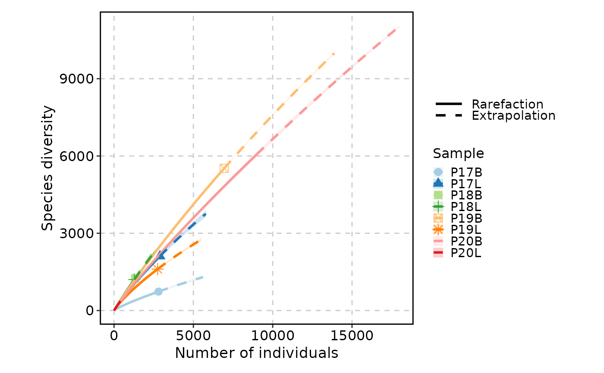
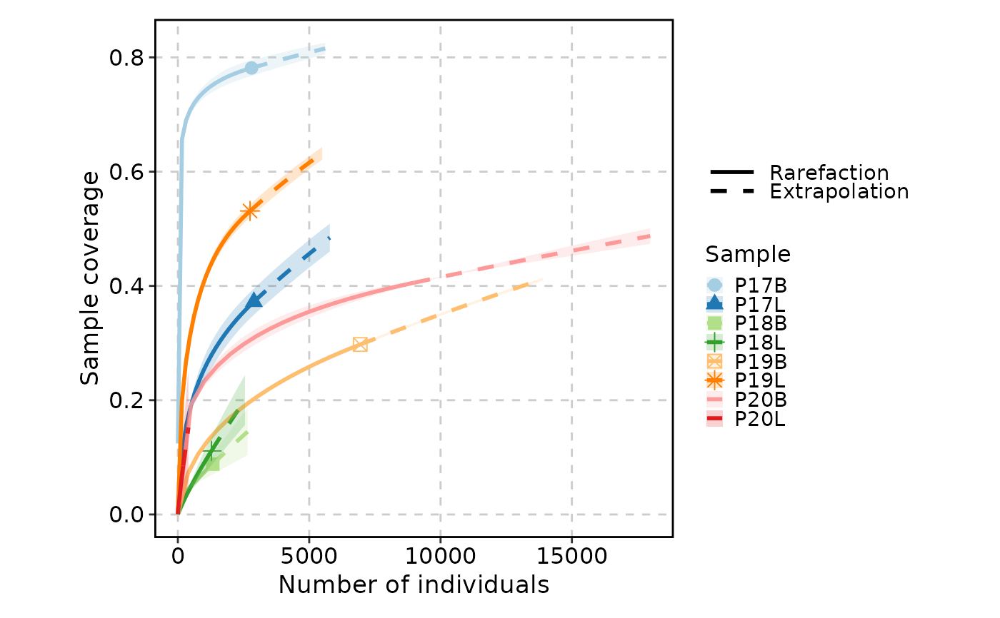
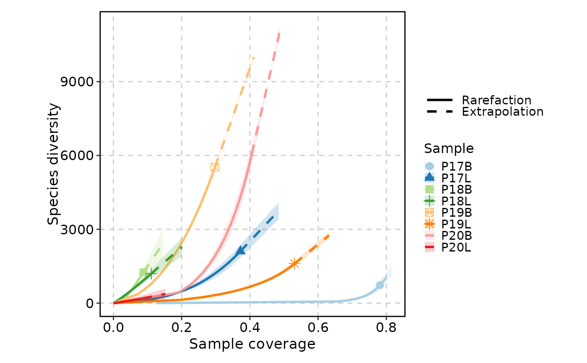
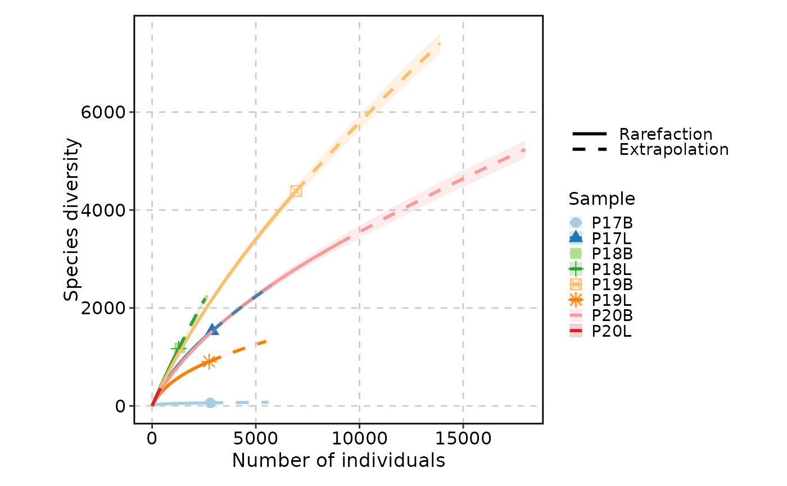
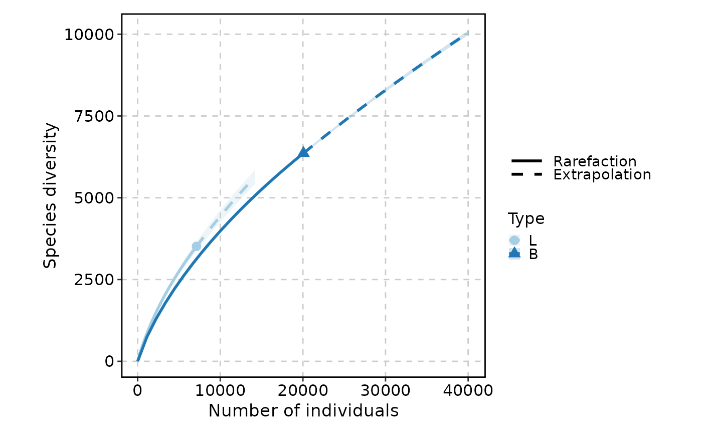
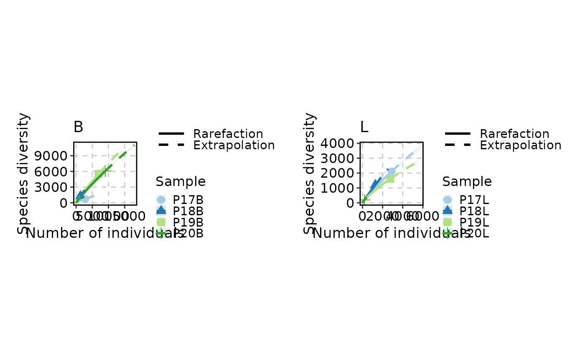

Visualizes clonal rarefaction curves — estimates of clone richness as a function of sampling depth. Rarefaction addresses a fundamental challenge in immune repertoire analysis: the number of clones observed depends on how many cells are sequenced. By repeatedly subsampling (bootstrapping) the data at varying depths, rarefaction curves reveal whether the repertoire has been sampled to saturation or whether additional sequencing would uncover many more clones.
ClonalRarefactionPlot extracts clone count data from the repertoire,
optionally groups it by metadata columns, and generates rarefaction
curves via plotthis::RarefactionPlot().
When split_by is specified, separate plots are generated for each split
group and combined into a multi-panel layout.
Usage
ClonalRarefactionPlot(
data,
clone_call = "aa",
chain = "both",
group_by = "Sample",
group_by_sep = "_",
order = NULL,
n_boots = 20,
q = 0,
facet_by = NULL,
split_by = NULL,
split_by_sep = "_",
palette = "Paired",
combine = TRUE,
nrow = NULL,
ncol = NULL,
byrow = TRUE,
...
)Arguments
- data
The product of
scRepertoire::combineTCR(),scRepertoire::combineBCR(), orscRepertoire::combineExpression().- clone_call
How to define a clone. One of
"gene","nt","aa"(default),"strict", or a custom variable name in the data.- chain
Which chain(s) to use:
"both"(default),"TRA","TRB","TRD","TRG","IGH", or"IGL".- group_by
Metadata column(s) used to define the curves (each unique group produces one rarefaction curve). Multiple columns are concatenated using
group_by_sep. Default is"Sample".- group_by_sep
Separator used when concatenating multiple
group_bycolumns. Default is"_".- order
A named list controlling the order of factor levels. List names are column names; list values are the desired order. Default is
NULL.- n_boots
Number of bootstrap iterations for estimating confidence intervals. Higher values produce smoother confidence bands but increase computation time. Default is
20.- q
The diversity order (Hill number).
0for species richness,1for Shannon entropy,2for Simpson index. Default is0. See the Hill numbers section for details.- facet_by
Not supported for
ClonalRarefactionPlot. Usesplit_byorgroup_byinstead. Must beNULL.- split_by
Metadata column used to split the data into separate rarefaction plots. When specified, an independent rarefaction is performed for each split group, and all plots are combined. Default is
NULL.- split_by_sep
Separator used when concatenating multiple
split_bycolumns. Default is"_".- palette
Color palette for distinguishing curves from different groups. Default is
"Paired".- combine
Logical; if
TRUE(default), multiple plots (fromsplit_by) are combined into a single layout.- nrow
Number of rows in the combined plot layout. Default is
NULL(auto-determined).- ncol
Number of columns in the combined plot layout. Default is
NULL(auto-determined).- byrow
Logical; if
TRUE(default), the combined layout is filled row by row.- ...
Additional arguments passed to
plotthis::RarefactionPlot(). Key parameters include:type— Plot type:1(line only),2(line with confidence band), or3(confidence band only).title— Plot title.xlab,ylab— Axis labels.
Note
Bootstrap iterations: The n_boots parameter controls the number of
resampling iterations. Higher values give more stable estimates but
increase computation time linearly. For exploratory analysis, n_boots = 20 is typically sufficient; for publication-quality figures, consider
using n_boots = 100 or more.
facet_by not supported: Unlike many other scplotter functions,
ClonalRarefactionPlot does not support facet_by. Use split_by for
separate plots or group_by to show multiple curves on the same axes.
Hill numbers (the q parameter)
The q parameter selects the diversity order (Hill number) used for
rarefaction:
q = 0— Species richness (clone count). Counts the number of distinct clonotypes regardless of their size. Most sensitive to rare clones.q = 1— Shannon entropy (exponential). Weighs clones proportionally to their abundance. Balances rare and dominant clones.q = 2— Simpson index (inverse). Weighs dominant clones more heavily. Least sensitive to rare clones.
Higher values of q increasingly emphasize abundant clones over rare
ones.
Examples
# \donttest{
set.seed(8525)
data(contig_list, package = "scRepertoire")
data <- scRepertoire::combineTCR(contig_list,
samples = c("P17B", "P17L", "P18B", "P18L", "P19B","P19L", "P20B", "P20L"))
data <- scRepertoire::addVariable(data,
variable.name = "Type",
variables = factor(rep(c("B", "L"), 4), levels = c("L", "B"))
)
data <- scRepertoire::addVariable(data,
variable.name = "Subject",
variables = rep(c("P17", "P18", "P19", "P20"), each = 2)
)
ClonalRarefactionPlot(data, type = 1, q = 0, n_boots = 2)
#> Warning: The shape palette can deal with a maximum of 6 discrete values because more
#> than 6 becomes difficult to discriminate
#> ℹ you have requested 8 values. Consider specifying shapes manually if you need
#> that many of them.
#> Warning: Removed 2 rows containing missing values or values outside the scale range
#> (`geom_point()`).

ClonalRarefactionPlot(data, type = 2, q = 0, n_boots = 2)
#> Warning: The shape palette can deal with a maximum of 6 discrete values because more
#> than 6 becomes difficult to discriminate
#> ℹ you have requested 8 values. Consider specifying shapes manually if you need
#> that many of them.
#> Warning: Removed 2 rows containing missing values or values outside the scale range
#> (`geom_point()`).

ClonalRarefactionPlot(data, type = 3, q = 0, n_boots = 2)
#> Warning: The shape palette can deal with a maximum of 6 discrete values because more
#> than 6 becomes difficult to discriminate
#> ℹ you have requested 8 values. Consider specifying shapes manually if you need
#> that many of them.
#> Warning: Removed 2 rows containing missing values or values outside the scale range
#> (`geom_point()`).

ClonalRarefactionPlot(data, q = 1, n_boots = 2)
#> Warning: The shape palette can deal with a maximum of 6 discrete values because more
#> than 6 becomes difficult to discriminate
#> ℹ you have requested 8 values. Consider specifying shapes manually if you need
#> that many of them.
#> Warning: Removed 2 rows containing missing values or values outside the scale range
#> (`geom_point()`).

ClonalRarefactionPlot(data, q = 1, n_boots = 2, group_by = "Type")

ClonalRarefactionPlot(data, n_boots = 2, split_by = "Type")

# }